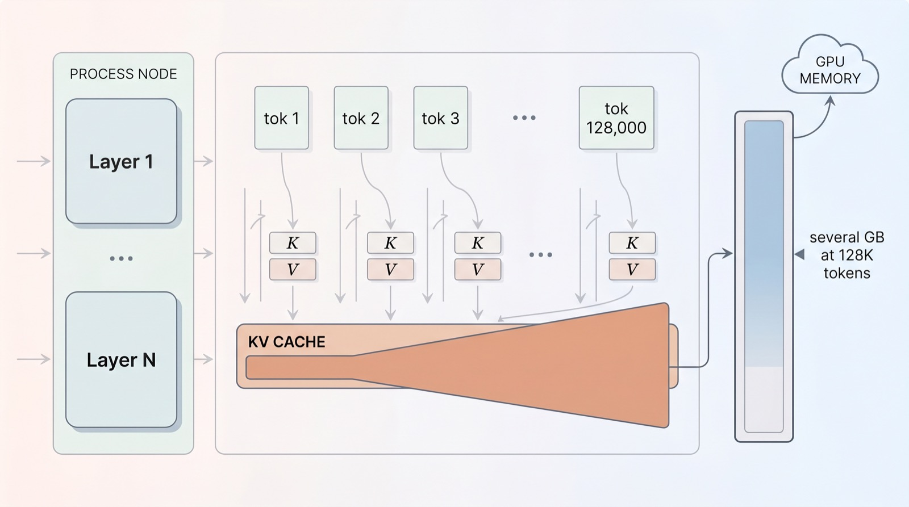
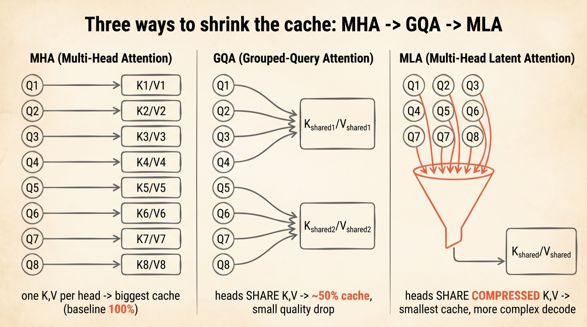
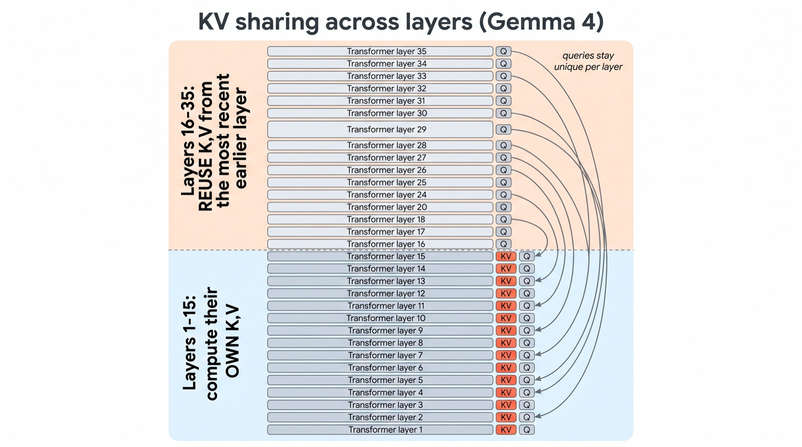
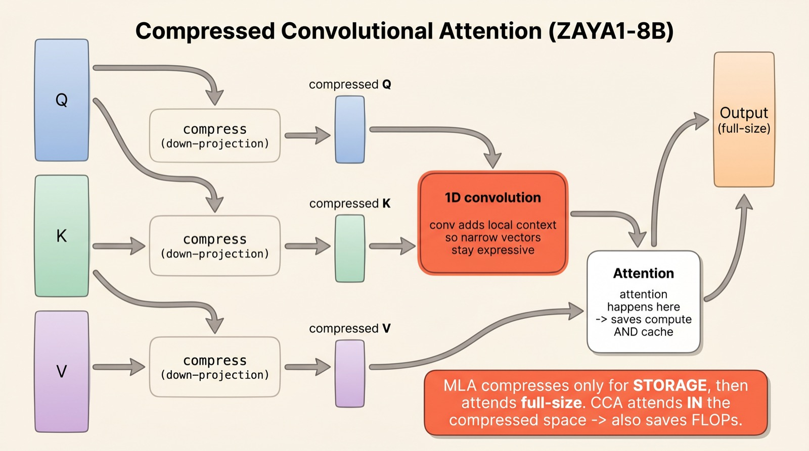
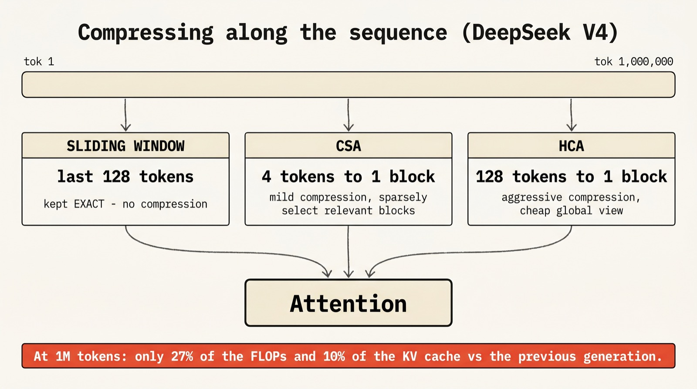
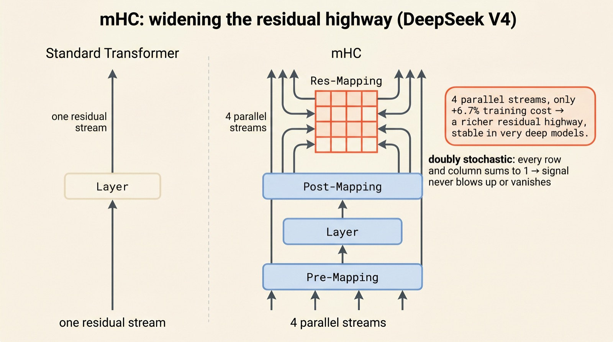

The quiet revolution inside attention
Shrinking the
KV cache
A million-token context used to mean melting your GPU. In 2026 the cleverest models — Gemma 4, ZAYA1, DeepSeek V4 — barely break a sweat. Here is how they did it, drawn out step by step.
The headline numbers in modern LLMs are about size and benchmarks. The interesting story is quieter: a stack of small architectural tricks that attack the one resource long context burns fastest — memory. This is a visual tour of those tricks.
Scroll to begin.
↓
The cache that eats your GPU
When a language model reads a long document, it does not re-read everything from scratch for every new word. That would be hopelessly slow. Instead, for every token it has already seen, it stores two little vectors — a key and a value — and keeps them in memory so future tokens can attend back to them. This running store is the KV cache, and it is the single most important object in modern long-context inference.
The trouble is arithmetic. The cache grows linearly with the number of tokens: one key and one value per token, per attention head, per layer. A short chat barely registers. But push the context to 128,000 tokens — a long codebase, a book, a multi-hour agent session — and the cache balloons into several gigabytes of GPU memory that must be held the entire time.

And memory is only half the pain. To generate the next token, the model has to read the whole cache back out of memory. The longer the context, the more bytes shuffle across the memory bus for every single word produced. This is why long-context generation feels slow even on fast chips: the bottleneck is not the maths of attention, it is the cost of moving the cache around.
So the entire 2026 wave of architecture tweaks can be read as different answers to one question: how do we make the KV cache smaller without making the model dumber? There turn out to be three big families of answer — share it, compress it, or summarize it.
Share, then compress
The first wave of fixes lived inside a single attention layer, and they form a neat progression. Start with classic Multi-Head Attention (MHA): every query head gets its own private key and value. Lots of heads means lots of cache — this is the expensive baseline that everything else improves on.
Grouped-Query Attention (GQA) was the pragmatic compromise that dominated 2024–2026. Instead of one key/value per query head, several query heads share a single key/value pair. Llama 3 and 4, for instance, run 32 query heads against just 8 shared K/V groups. The cache roughly halves, with only a small quality cost.

DeepSeek's Multi-Head Latent Attention (MLA) took a different route. Rather than reducing how many keys and values you keep, it shrinks what each one is. The K and V tensors are squeezed through a learned low-rank projection into a single small latent vector, and it is that latent — not the full-size keys and values — that lives in the cache. At use time, the latent is projected back up to full size.
The payoff is the surprising part. At a 4K context with 32 heads, MLA cuts cache memory by roughly 75% versus MHA — and in DeepSeek's own ablations it matched or slightly beat full MHA on quality, while GQA gave up about half a perplexity point. Compression, done right, turned out to be nearly free.
These are the foundations. Everything in the 2026 crop builds on top of them — by pushing the same ideas across layers, into the attention computation itself, and along the length of the sequence.
Reuse across layers
GQA shares keys and values within a layer. Google's Gemma 4 asks the obvious follow-up: why not share them across layers too? Stacked transformer layers often compute remarkably similar key/value representations, especially deeper in the network — so storing a fresh copy at every layer is partly redundant.
In Gemma 4 E2B, only the first 15 of its 35 layers compute their own keys and values. The remaining 20 layers reuse the K/V tensors from the most recent earlier layer of the same attention type. Each layer still computes its own queries — so it can still ask its own questions — but it borrows the keys and values it asks them against.

The accounting is clean: store KV for fewer than half the layers and you cut that part of the cache by roughly half — about 2.7 GB saved at a 128K context in bfloat16, on a small model that has to fit on modest hardware. Gemma 4 pairs this with "per-layer embeddings" — cheap lookup-table vectors that add capacity to a small model without growing the expensive transformer stack. Different trick, same spirit: spend memory where it is cheap, not where it is dear.
This is the theme of the whole movement in miniature. No exotic new mathematics — just the recognition that a resource you were spending uniformly can be spent selectively, because not every layer actually needs its own copy.
Attend inside the squeeze
MLA compresses the keys and values for storage, but then projects them back to full size before computing attention. So it saves memory, not arithmetic — the attention maths still happens at full width. Compressed Convolutional Attention (CCA), introduced in ZAYA1-8B, asks: what if we just did the attention inside the compressed space and never expanded back?
In CCA, the queries, keys and values are all down-projected into a narrow latent space, and the attention scores are computed directly there. Because the vectors are smaller, you save on cache and on the floating-point operations of attention itself — during training and during the prefill of long prompts, not just generation.

There is an obvious risk: squeeze the vectors too hard and attention gets blurry — narrow vectors simply carry less information. CCA's fix is the "convolutional" half of its name. Before computing scores, a small 1-D convolution mixes each compressed query and key with its neighbours, giving every position a little local context to lean on. That extra structure buys back the expressiveness that compression took away — and in the paper's tests, CCA outperformed MLA at comparable compression.
It is a subtle shift in where the savings come from. GQA and MLA make the cache cheaper. CCA makes the act of attending cheaper — a different lever on the same problem.
Compress the timeline, not the token
Every trick so far compresses things per token: smaller keys, shared keys, latent keys. But you still keep one entry for every token you have ever seen. At a million tokens, that is a million entries no matter how small each one is. DeepSeek V4's boldest move is to compress along a different axis entirely — the sequence dimension — by summarizing groups of tokens into far fewer entries.
It does this with two complementary mechanisms running in parallel, plus a safety net for recent context:

CSA — Compressed Sparse Attention applies mild compression, bundling tokens into small groups (around 4-to-1), then uses sparse top-k selection to attend only to the handful of compressed blocks that actually matter for the current token. It keeps detail, but looks at little of it.
HCA — Heavily Compressed Attention goes the other way: it crushes blocks of 128 tokens into a single entry and attends densely over those. Each block is a coarse summary, but there are so few of them that the model can afford to read all of them — a cheap, blurry, global view of the whole context.
Neither is safe alone, so DeepSeek interleaves CSA and HCA layers — detail where it is needed, global coverage everywhere — and both branches sit alongside a 128-token sliding window that keeps the most recent tokens fully uncompressed and exact.
The result is the headline of the whole article: at a million-token context, DeepSeek V4-Pro runs on roughly 27% of the per-token FLOPs and 10% of the KV cache of the previous generation. Summarizing the timeline, rather than every token on it, is what finally makes million-token context economical.
A wider residual highway
Not every 2026 trick is about the cache. The last one, manifold-constrained hyper-connections (mHC), is about expressiveness — and it appears in DeepSeek V4 right beside the compression machinery, because the two pull in opposite directions and need to be balanced.
Every transformer has a "residual stream" — the running highway of information that each layer reads from and writes back to. Traditionally there is exactly one such stream. mHC replaces it with several parallel streams (four, in DeepSeek V4), giving the model a wider road to carry information up through the network.

The danger with multiple streams is stability: mix them carelessly across dozens of layers and the signal either explodes or fades to nothing. The "manifold-constrained" part is the cure. The matrix that mixes the streams between layers is forced to be doubly stochastic — every row and every column sums to one, and all entries stay non-negative. That constraint guarantees the total signal is neither amplified nor shrunk as it travels, keeping very deep models stable.
And it is cheap. Four parallel streams add only about 6.7% training overhead on a 27B model — a small price for a richer information highway. Where the compression tricks claw back resources, mHC quietly reinvests a little of them into making the model think better.
Why this matters, and what to watch
Step back and the pattern is striking. None of these ideas is a dramatic reinvention of the transformer. They are six careful answers to one mundane constraint — memory — and together they are what separate a model that can read a million tokens from one that can do it affordably.
For anyone building with these models, the practical upshot is that long context is quietly getting cheap. The agent that holds an entire codebase in mind, the assistant that remembers a months-long conversation, the model that reasons over a whole book — these stop being expensive luxuries and become the default. The constraint that shaped a generation of prompt-engineering workarounds is being engineered away.
What to watch next: how aggressively sequence-level compression (CSA/HCA) can be pushed before quality genuinely suffers, whether compressed-space attention like CCA spreads beyond a handful of labs, and whether these tricks compose cleanly — or interfere — when stacked in the same model. The interesting frontier in LLMs right now is not only bigger. It is lighter.
Adapted and illustrated from Sebastian Raschka's "Recent Developments in LLM Architectures." Explained simply, drawn out fully.